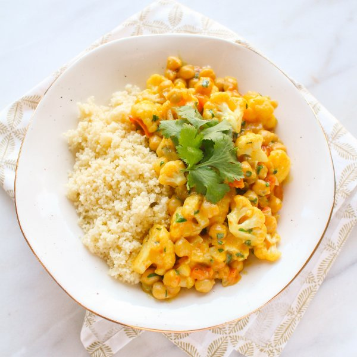

Cauliflower & Chickpea Coconut Curry with Couscous

Prep Time
40 min
Nutrition (per serving)
773.6 kcalCalories
28.4 gProtein
106.1 gCarbs
33 gFat
Full nutrition table
| Calories | 773.6 kcal |
| Total fat | 33 g |
| Saturated fat | 24.6 g |
| Trans fat | 0 g |
| Cholesterol | 0 mg |
| Sodium | 430.4 mg |
| Carbohydrates | 106.1 g |
| Fiber | 25.6 g |
| Sugars | 15.3 g |
| Protein | 28.4 g |
| Potassium | 2006.7 mg |
| Calcium | 198 mg |
| Iron | 6.4 mg |
| Vitamin A | 1088.1 IU |
| Vitamin C | 168.5 mg |
| Vitamin D | 0 IU |
Cookware
Ingredients
- 2 medium headscauliflower
- 16 fl ozchicken or vegetable broth
- 1 small bunchcilantro
- 1 (13.5 fl oz) cancoconut milk
- 2 (15 oz) cansgarbanzo beans (chickpeas)
- 4 clovesgarlic
- 4tomatoes
- 1 ⅓ cupswhole wheat couscous
- 1 mediumyellow onion
- black pepper
- curry powder
- salt
- virgin coconut oil
Steps
- Wash cauliflower and tomatoes. Cut the cauliflower into bite-sized florets. Medium dice the tomatoes.2 medium heads cauliflower
4 tomatoes - Heat a sauté pan over medium-high heat.
- Peel and mince onion and garlic.1 medium yellow onion
4 cloves garlic - Coat bottom of pan with oil. Add onion and cook, stirring frequently, until softened, 3-4 minutes.2 tbsp virgin coconut oil
- Drain and rinse chickpeas.2 (15 oz) cans garbanzo beans (chickpeas)
- Add garlic and curry powder to pan and stir with onion until fragrant, 15-30 seconds.2 tbsp curry powder
- Add cauliflower and chickpeas and stir until heated through, 1-2 minutes.
- Add tomatoes, coconut milk, salt, and pepper; bring to a boil. Reduce heat to a simmer and cover. Cook until cauliflower is tender and liquid thickens, about 10 minutes.1 (13.5 oz) can coconut milk
½ tsp salt
¼ tsp black pepper - In a small saucepan, bring broth to a boil. Remove from heat, add couscous, and stir. Cover and let stand for 10 minutes.16 fl oz (2 cups) chicken or vegetable broth
1 ⅓ cups whole wheat couscous - Wash and dry cilantro. Shave the leaves off the stems; discard the stems and mince the leaves. Stir ½ into the curry (save the rest for garnishing).1 small bunch cilantro
- Uncover couscous and fluff with a fork.
- To serve, place couscous in a bowl, top with curry and garnish with remaining cilantro. Enjoy!